Captured 2026-08-16 in a real Chromium browser at iPhone size (390×844), scrolling one screen at a time. Nothing here is cropped or rearranged. · Back to the dashboard
Two automated passes at measuring “how far down is the buy button” gave answers the pictures contradict — a hidden element in the page code was being read as the buy button, and the resulting chart was published before anyone looked at it. This page publishes the raw screens so any claim in the dashboard can be checked by eye rather than taken on trust.
What the pictures actually show: the buy button first appears on screen 1 for Cheers, screen 2 for Super Liver and More Labs, and screen 3 for Grüns and The Absorption Company. Our buy-box position is second-shortest in the set, not the longest. The real gap is the pinned add-to-cart bar that Cheers and The Absorption Company carry and we do not.
superbonsai.com/products/super-liver
Screen 1 is the page exactly as it is delivered: a full-screen pop-up at 0.0 seconds, covering the whole phone, scroll locked. Screens 2 onward are after dismissing it.
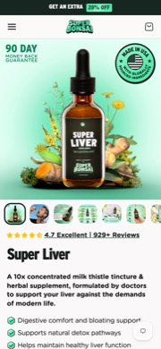
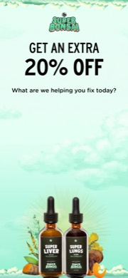
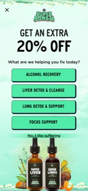
superbonsai.com/products/super-liver
The same page with the pop-up vendor blocked at the network level, so the page itself is visible. The ADD TO CART button is on screen 2. Note what is pinned at every depth: the navigation header with a cart icon — and nothing else.
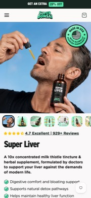
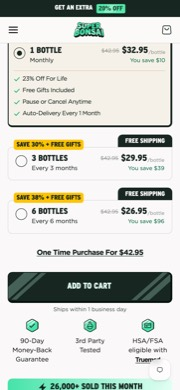
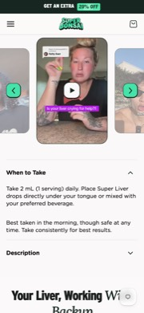
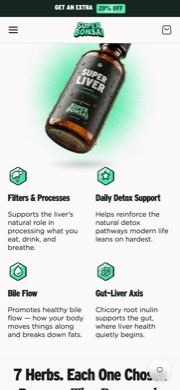
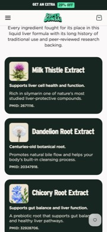
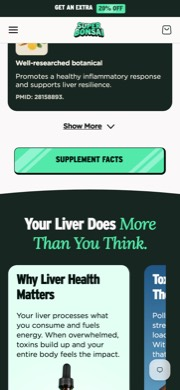
cheershealth.com/products/restore
Look at the bottom of screen 1: “Restore — Add to cart for $35”, pinned before any scrolling, and it stays there.
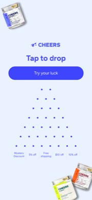
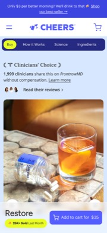
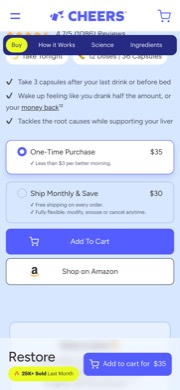
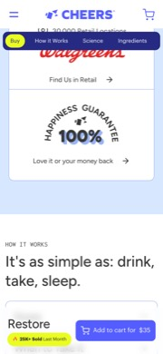
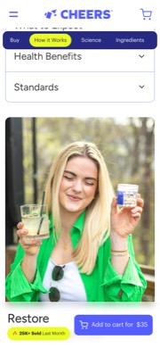
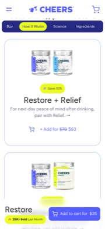
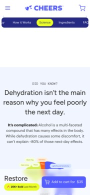
morelabs.com
No pop-up at all. Buy button on screen 2.
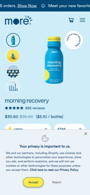
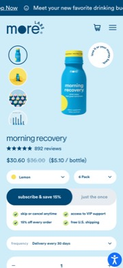
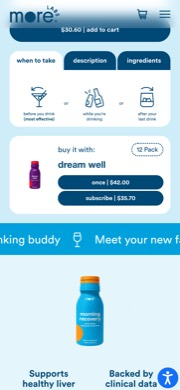
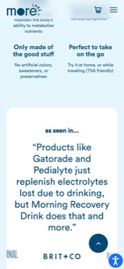
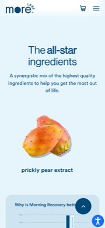
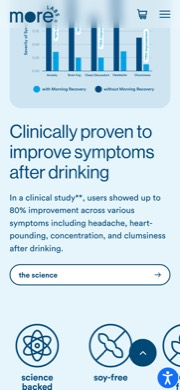
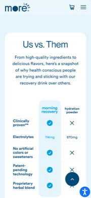
gruns.co/products/gruns
Flavour picker, sugar level and quantity all come before the plan tiles. The Start Now button is on screen 3.
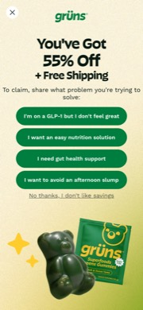
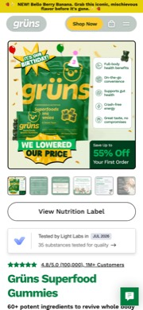
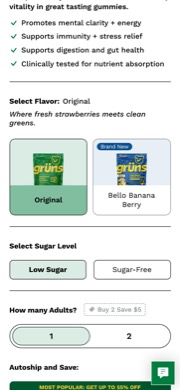
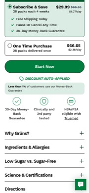
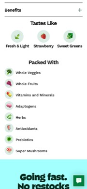
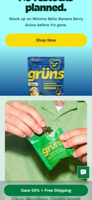
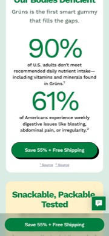
absorbmore.com
ADD TO CART is on screen 3, after four clinical stat tiles and the 70-Day Challenge banner. Note the gifts labelled REFILL 1 and REFILL 2, and the de-emphasised “BUY ONCE FOR $444.00 →” link under the button.
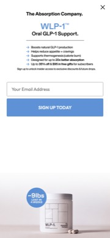
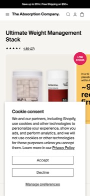
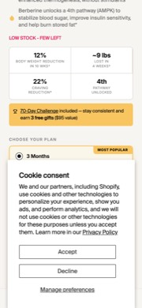
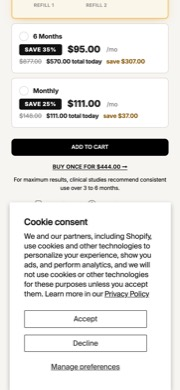
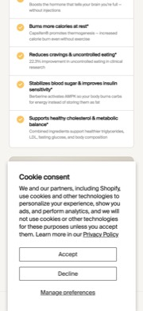
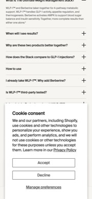
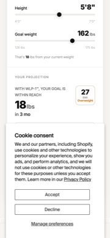